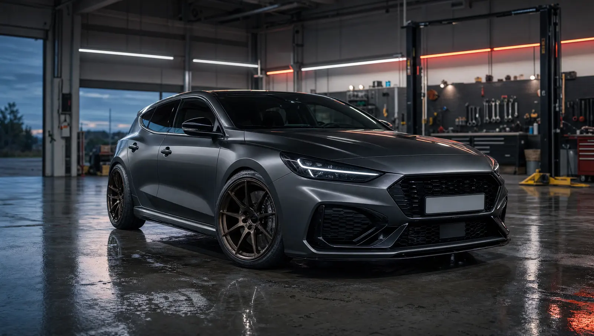
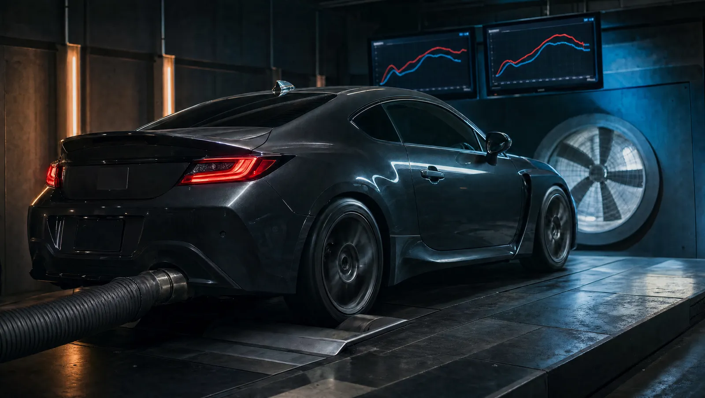
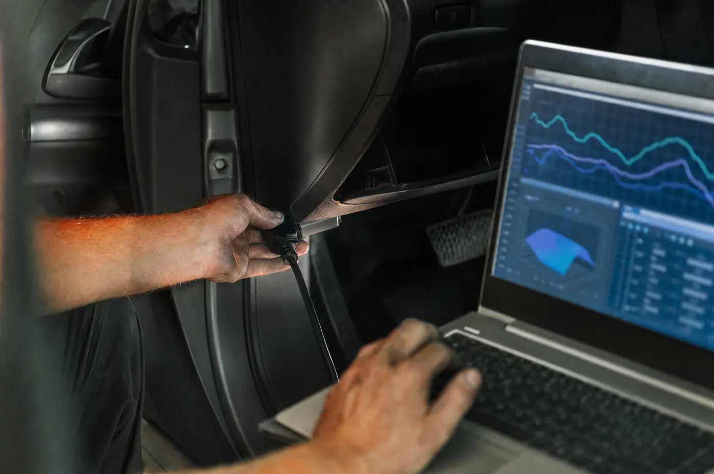
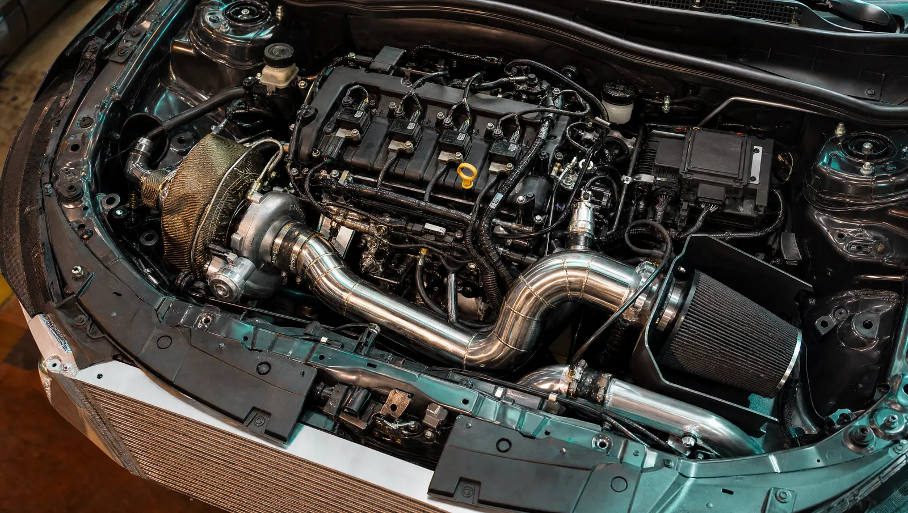
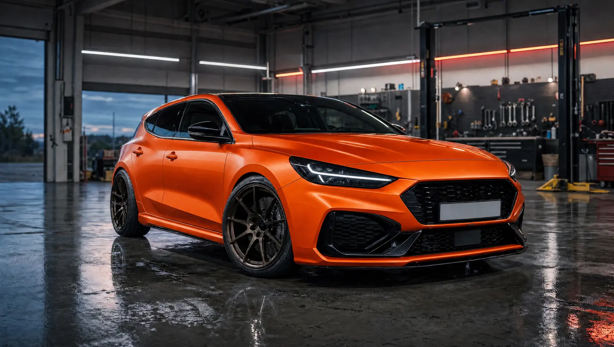
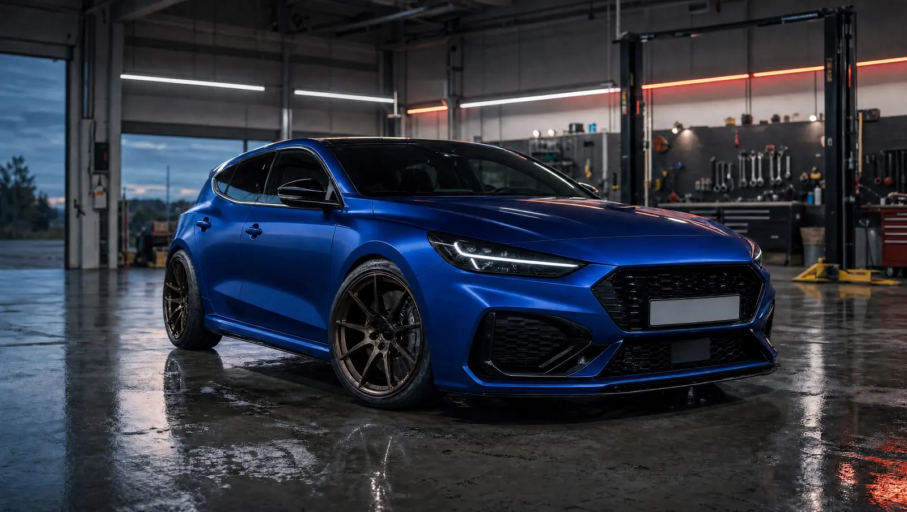
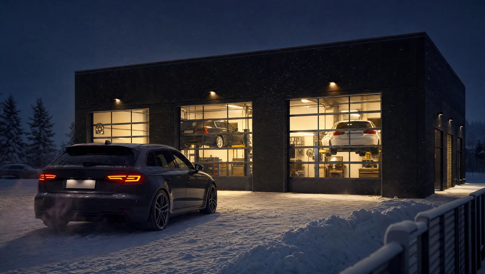

Korjaamo · Virityspaja · Mittaus
Mitataan.Ei arvata.
Huolto, diagnostiikka ja ECU-viritys autoille, joita rakastetaan. Jokainen muutos mitataan ennen ja jälkeen, jotta tiedät mitä sait.
Painike toistaa synteettisen moottoriäänen. Ääni alkaa vasta kun painat.
Luvut mitataan selaimessa juuri tältä sivulta. Taustavideo ladataan vasta mittauksen jälkeen.
01 / Palvelut
Kaikki mitä autosi tarvitsee
Avaa kortti nähdäksesi mitä palvelu sisältää. Valitse sopivat palvelut, niin ne siirtyvät suoraan ajanvaraukseen.
Hinnat sovitaan aina kiinteänä tarjouksena mittauksen jälkeen.
02 / Viritys
Näe mitä viritys tekee
Valitse taso ja vedä kursoria käyrällä. Näet teho- ja vääntöindeksin jokaisella kierrosluvulla.
Havainnollistava malli, ei todellinen mittaus. Indeksi 100 = alkuperäisen auton huipputeho. Todellinen tulos riippuu autosta ja mitataan aina ennen ja jälkeen työn.


03 / Moottoritila
Tutki moottoritilaa
Klikkaa numeroituja pisteitä. Kerromme mitä osa tekee ja mitä siitä tarkistetaan ennen viritystä.

Aloita klikkaamalla
Pisteet on merkitty kuvaan numeroilla 1–7.
Pisteet toimivat myös näppäimistöllä: Tab siirtyy pisteelle, Enter avaa selityksen.
04 / Kalvotus ja maalaus
Valitse väri
Kalvotamme ja maalaamme. Vaihda väriä ja katso miltä sama auto näyttää eri sävyissä.


Kuvat ovat havainnekuvia. Todellinen sävy valitaan värimallien kanssa.
05 / Työlista
Rakenna autosi työlista
Kerro käyttötarkoitus ja tavoitteet. Ehdotamme palvelut, joilla pääset sinne, ja voit viedä listan suoraan varaukseen.
Auton polttoaine
Käyttö
Tavoitteet (monta voi valita)
Valitse vähintään yksi tavoite, niin työlista ilmestyy tähän.
06 / Näin se toimii
Neljä askelta
Varaa aika
Valitse palvelu ja sopiva aika. Kerro mitä haluat.
Mittaus ja diagnoosi
Luemme viat ja mittaamme lähtötilanteen, jotta tiedetään missä mennään.
Suunnitelma ja tarjous
Käymme työt läpi ja annamme kiinteän tarjouksen. Mikään ei yllätä laskussa.
Työ ja jälkimittaus
Teemme työn ja mittaamme uudestaan. Näet eron mittauksesta.
Katsastus ja laillisuus
Osa muutoksista edellyttää muutoskatsastusta tai ilmoitusta. Käymme ne läpi ennen työn aloitusta, jotta auto pysyy tieliikennekelpoisena. Rata- ja kilpailukäyttöön tehtävät muutokset kerrotaan omana kokonaisuutenaan.

Valmis?
Kerro mitä autolle pitäisi tehdä
Varaus kestää alle minuutin. Vastaamme viestiisi, kun olemme katsoneet tiedot.
Varaa aika